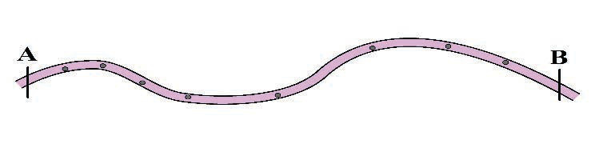

Kwa kutumia rula;
- (a) Kokotoa umbali wa kutoka Kitunda Misioni mpaka ofisi ya kijiji.
- (b) Kokotoa umbali wa kutoka ofisi ya kijiji mpaka ofisi ya kitongoji.
- (c) Kokotoa umbali wa kutoka ofisi ya kitongoji mpaka Kitunda Misioni.
Upimaji wa umbali usionyooka
Ili kupima umbali wa vitu visivyonyooka kama vile mto, barabara au reli, vifaa kama bikari, kipande cha karatasi, uzi na skeli ya ramani hutumika.
Zifuatazo ni hatua za kubaini umbali usionyooka katika ramani kwa kutumia uzi.
(a) Baini vituo viwili vinavyounganika kwa mstari usionyooka.Kwa mfano, kituo A na B, kisha gawa umbali unaohitajika kupimwa katika vipande vifupivifupi ambavyo vimenyooka na weka alama kama inavyowasilishwa katika Kielelezo namba 13.

Kielelezo namba 13: Umbali unaohitajika kupimwa kutoka kituo A hadi kituo B
(b) Chukua uzi na ufunge fundo kwenye ncha ya mwisho upande wa kushoto, kisha ulaze uzi huo kwenye mstari usionyooka unaounganisha vituo viwili kwakufuatisisha vipande vifupivifupi ulivyovigawa katika mstari, na weka alama kwenye uzi huo kuelekea upande wa pili.Funga fundo la pili kwenye uzi.